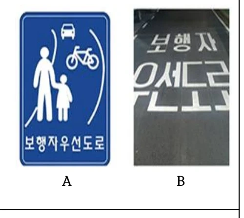

931. 다음 A, B와 관련된 설명 중 옳지 않은 것 2가지는?

- ①A는 보행자 우선 도로를 의미하는 지시표지이며, B는 보행자 우선 도로를 의미하는 노면표시 이다.
- ②보행자 우선 도로에서는 보행자가 도로의 전 부분으로 통행할 수 있다.
- ③보행자 우선 도로에서는 보행자가 우선이므로 고의로 차마의 진행을 방해해도 된다.
- ④보행자 우선 도로에서는 보행자만 통행할 수 있다.
정답 보기
정답
③ 보행자 우선 도로에서는 보행자가 우선이므로 고의로 차마의 진행을 방해해도 된다.
④ 보행자 우선 도로에서는 보행자만 통행할 수 있다.
근거·해설
A는 보행자 우선 도로 지시표지이며, B는 동일한 의미의 노면표시이다(도로교통법 시행규칙 [별표6]). 보행자 우선 도로 에서는 보행자가 도로의 전 부분을 통행할 수 있다. 반면, 보행자가 우선이더라도 보행자가 도로에서 고의로 차량의 통 행을 방해해서는 안 된다(도로교통법 제8조 제3항). ④은 보행자 전용 도로에 대한 설명이다(도로교통법 제2조 제31호).